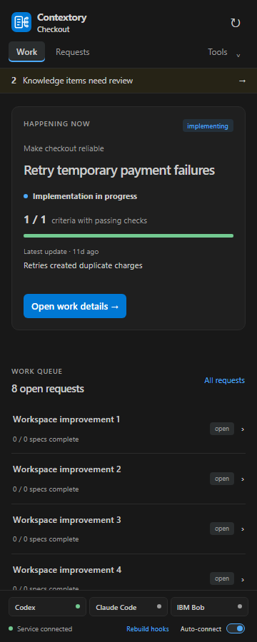

Contextory / Sua primeira alteração rastreada
Sua primeira alteração rastreada
Conecte o agente nativo
- Abra o projeto confiável. O Contextory prepara todos os agentes nativos compatíveis detectados quando Auto-connect está ativo.
- Para configuração manual, clique no controle do agente no rodapé ou execute Contextory: Connect Native Codex, Contextory: Connect Native Claude Code ou Contextory: Connect Native IBM Bob.
- Revise a configuração gerada no workspace e aprove MCP/hooks pelo cliente nativo. Recarregue ou reabra a sessão quando solicitado.
- Peça ao agente para chamar contextory_workspace_get e contextory_context_get. Um indicador verde no rodapé registra tráfego MCP observado no serviço atual.

Configure uma verificação útil
Abra Preferences: Open Workspace Settings (JSON). Adicione uma receita para um comando já existente no projeto. O exemplo serve para projetos que usam o executor de testes do Node; adapte executável, argumentos e tempo limite ao seu projeto.
{
"contextory.checks": [{
"id": "unit", "name": "Unit tests",
"executable": "node", "args": ["--test"], "timeoutMs": 120000
}]
}As receitas executam código confiável do workspace com executável e lista de argumentos. As chamadas MCP selecionam a receita pelo ID e não fornecem comandos de shell arbitrários.
Implemente e conclua uma especificação
Use o Contextory para rastrear esta alteração: adicionar tentativas de recuperação ao checkout. Recupere decisões anteriores, crie marcos e especificações com critérios de aceite, inspecione o código afetado, registre problemas e decisões, execute nossas verificações configuradas e conclua explicitamente cada especificação verificada.- Revise o pedido e os critérios de aceite em Requests. O agente associa a sessão e obtém um lease da especificação antes de registrar a implementação.
- Inspecione alterações, problemas, decisões e resultados de verificações na especificação selecionada.
- O agente envia um resultado com evidências para cada critério e chama contextory_spec_change com action=complete e a revisão retornada.
- Confirme o estado completed. Apenas enviar o resultado deixa o trabalho aberto. Exporte o relatório do pedido para revisar o registro persistente.